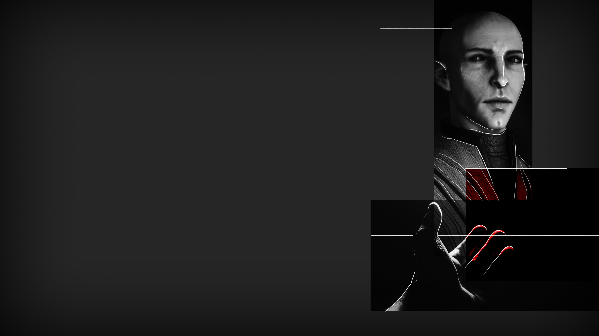

SPLITTED
SPLITTED

«Good evening, beloved devotees and citizens of Aether» a bald man appears on the stage in front of us. «Let me just tell you how glad I am to see so many people showing up for this holy function. Please be seated.»
Many people around me take their places and stop chatting with others.
«We start this function remembering the 27 miners who lost their lives in the earthquake a week ago. It is such a sad event, but one that we must learn from. I am sure we will miss this people. We are allowed to cry. But let's not forget their departure is part of a greater plan. Mother Gloom is now taking care of their bodies and souls.»